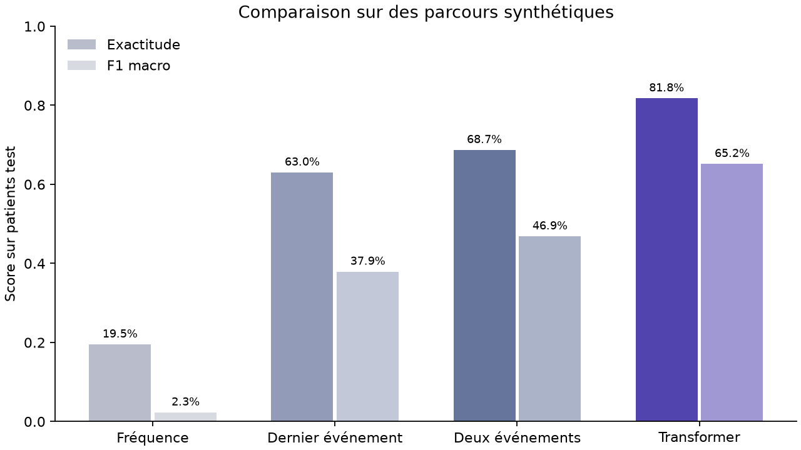
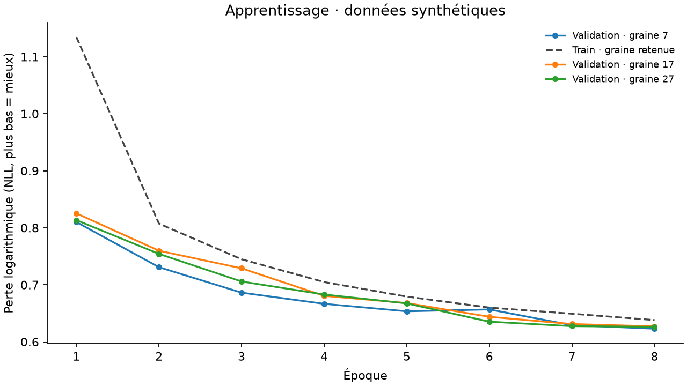
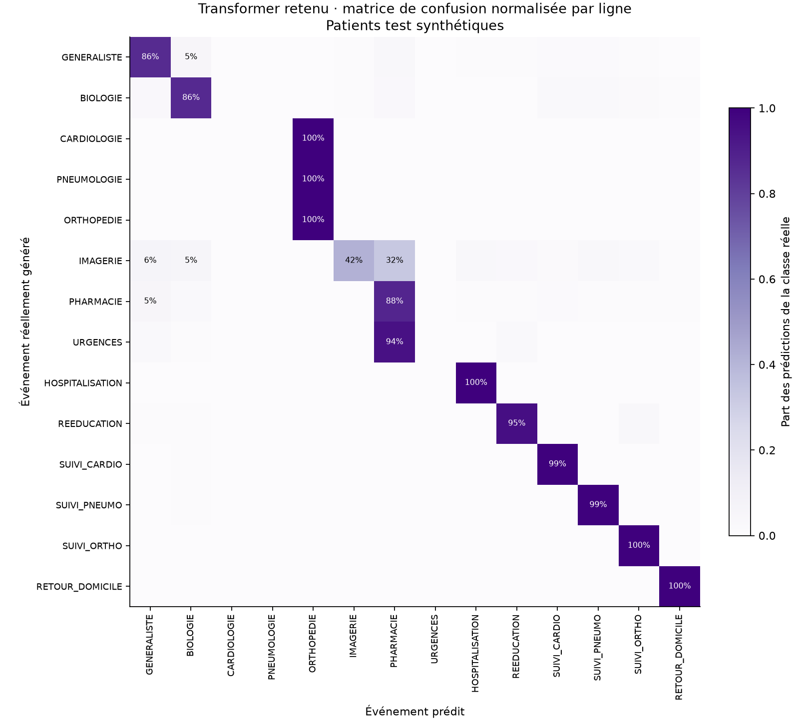

GENERALISTE → BIOLOGIE
Événement suivant généré : PNEUMOLOGIE
Top 3 : ORTHOPEDIE 39% · CARDIOLOGIE 30% · PNEUMOLOGIE 30%
Des historiques fictifs de soins transformés en embeddings, puis traités par un petit Transformer et comparés à des références statistiques.
18,798 paramètres · 2 couches · 4 têtes · dimension 32 · contexte maximal de 24 événements. Les dates ordonnent les données ; elles ne sont pas des caractéristiques du modèle.
| Modèle | Exactitude | Top 3 | F1 macro | NLL ↓ |
|---|---|---|---|---|
| Frequence | 19.5% | 56.3% | 0.023 | 2.281 |
| Markov_1 | 63.0% | 86.3% | 0.379 | 1.137 |
| Markov_2 | 68.7% | 90.6% | 0.469 | 0.921 |
| Transformer | 81.8% | 96.2% | 0.652 | 0.626 |
Le Transformer retenu dépasse la référence statistique retenue dans cette expérience synthétique.
Écart Transformer − référence : +13.06 points ; intervalle bootstrap à 95 % [+12.27 ; +13.83] points. Rééchantillonnage apparié de patients entiers, 1000 répétitions. Cet intervalle est conditionnel aux modèles et au générateur.


L’époque et la graine sont retenues sur la perte de validation. Le jeu de test intervient après cette sélection. Trois initialisations donnent une première indication de variabilité, sans remplacer une étude multi-jeux de données.
| Graine | Époque retenue | NLL validation | Exactitude test | Entraînement |
|---|---|---|---|---|
| 7 · retenue | 8 | 0.623 | 81.8% | 187.0 s |
| 17 | 8 | 0.627 | 82.0% | 221.1 s |
| 27 | 8 | 0.626 | 81.9% | 258.5 s |

Chaque ligne correspond à une classe réelle. Les spécialités initiales sont tirées au hasard après le même préfixe : certaines cibles sont donc intrinsèquement difficiles à prédire à ce stade.
Première fenêtre des premiers patients test triés. Avec seulement deux événements d’historique, la spécialité suivante n’est pas identifiable dans le générateur. Six exemples sont enregistrés dans examples.json.
GENERALISTE → BIOLOGIE
Événement suivant généré : PNEUMOLOGIE
Top 3 : ORTHOPEDIE 39% · CARDIOLOGIE 30% · PNEUMOLOGIE 30%
GENERALISTE → BIOLOGIE
Événement suivant généré : PNEUMOLOGIE
Top 3 : ORTHOPEDIE 39% · CARDIOLOGIE 30% · PNEUMOLOGIE 30%
GENERALISTE → BIOLOGIE
Événement suivant généré : PNEUMOLOGIE
Top 3 : ORTHOPEDIE 39% · CARDIOLOGIE 30% · PNEUMOLOGIE 30%
Le générateur contient volontairement des motifs et une dépendance à l’historique. La comparaison ne prouve pas la supériorité générale des Transformers. Les patients test proviennent du même générateur ; aucune validation temporelle, externe ou médicale n’est réalisée.
Diagnostic complémentaire : en conservant seulement deux événements à l’entrée du même checkpoint, l’exactitude atteint 56.9%. Cette troncature modifie la distribution et les positions ; elle n’isole pas causalement l’effet de la longueur du contexte.
Installation et utilisation · Comprendre et présenter le travail · Résultats détaillés